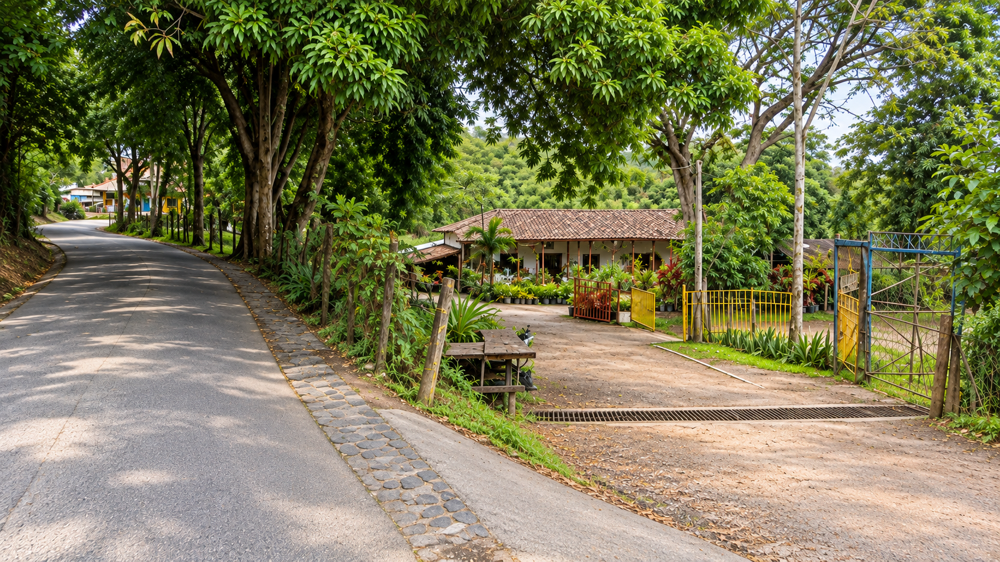
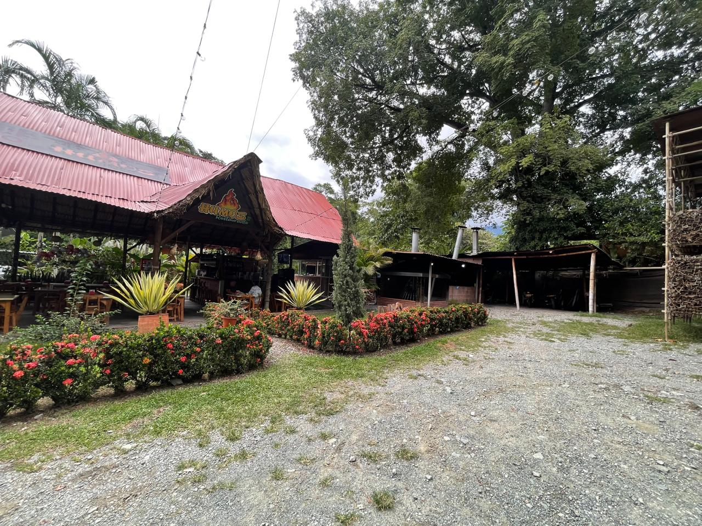
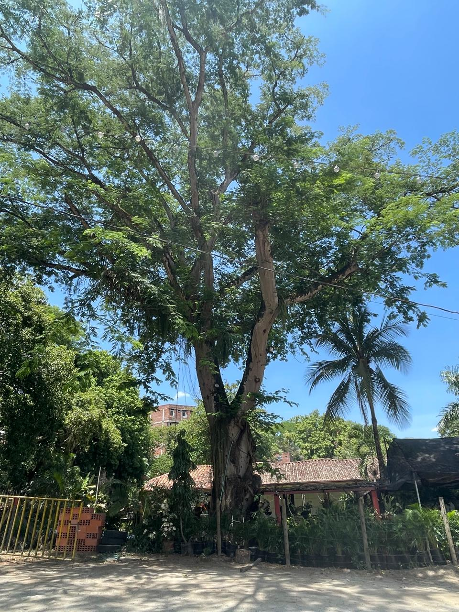
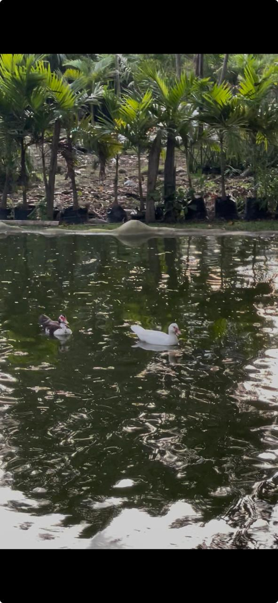
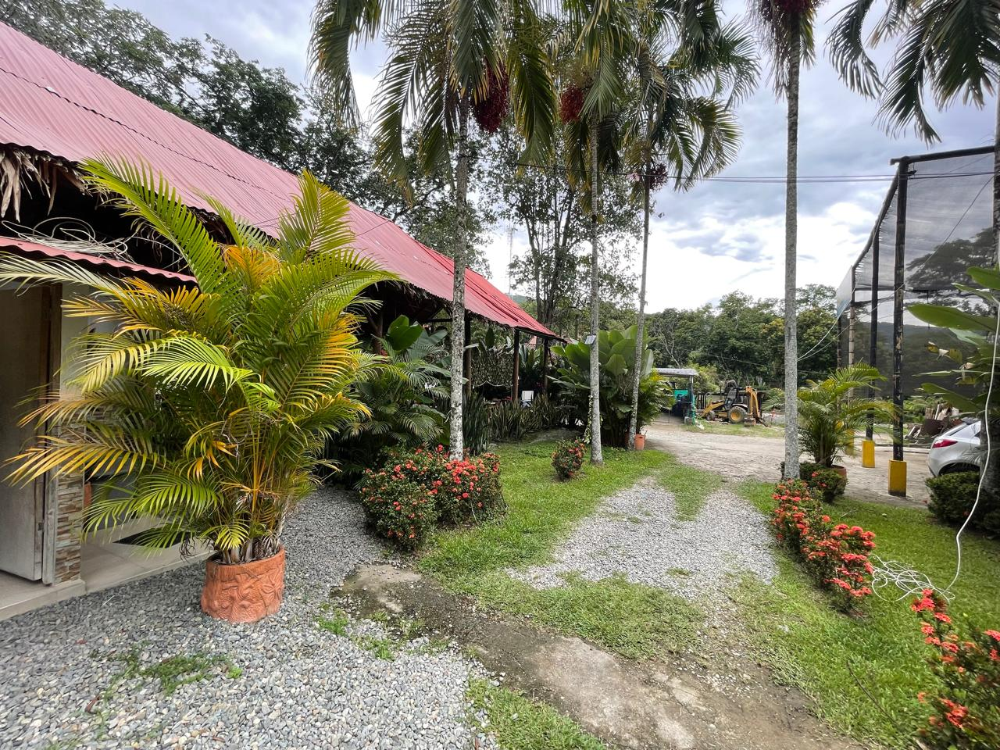

A
Frente comercial
Establecimientos con presencia junto a la vía y actividad actualmente arrendada.

Oportunidad de inversión · San Jerónimo, Antioquia
Naturaleza, lago y amplias zonas interiores; un frente comercial activo sobre la vía.
Más que un terreno
No se trata solamente de adquirir tierra. Esta oportunidad reúne una zona comercial con exposición sobre la vía y una propiedad interior donde la vegetación, el lago y los espacios abiertos construyen otra forma de habitar e invertir.
Explorar los espacios →A
Establecimientos con presencia junto a la vía y actividad actualmente arrendada.
B
Un ambiente verde con lago, árboles maduros y áreas que invitan a imaginar nuevos usos.

Registro fotográficoVisibilidad y actividad
El acceso conecta directamente con el entorno comercial de la vía. Restaurante, vivero y otros establecimientos dan contexto a una propiedad que ya tiene presencia y flujo.
El interior de la propiedad



Una lectura distinta de la inversión
“El frente comercial genera movimiento. El interior conserva espacio para imaginar.”
Conversemos
Solicita la información disponible y agenda una visita para recorrerla en persona.
Solicitar información →La información presentada es de carácter informativo y está sujeta a verificación.